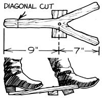

It used to be that almost any farm house or stable was considered ill-equipped unless it had a bootjack ... a little hardwood wedge that allows a person to slip off muddy or tight-fitting footwear without having to sit down and wrestle with it.
Nowadays you seldom see the handy devices except in riding apparel shops or on the pages of old-timey catalogs. However, if you'll be tromping through clay-caked pastures-or shoveling out some stalls -this summer, it's a good idea to cobble up one of the practical bootpriers and station it conveniently outside your back door.
First, find a stout green hardwood branch with a fork that's just a little bigger than one you'd use to make a slingshot. Try the notch out for size by fitting it around the heel of your boot . . . the "V" should grab the back of the footgear snugly.
After you've located a promising limb, saw the two prongs of the "wishbone" to a length of about seven inches each. Then make a diagonal cut across the other end of the stick, at a point nine or so inches from the crotch. Next, find a scrap block of 2 X 2 hardwood (a short, sturdy piece of another branch would work, too) to use as a brace . . . which will be attached underneath the Y-shaped bough.
Fasten the "step" to the tail of the limb slightly below the fork, using a screw or a nail (it's best to make a pilot hole to avoid splitting the wood) . . . or simply lash the components securely together. The riser should elevate the device just enough so that when the bootjack is placed on the floor, you can get a boot heel into it easily.
To put the little back-saving valet to work, stand with one foot on the tail of the jack, insert the other foot into the fork (if your brogans have laces, be sure to undo them), lean back, and ease off that boot ... without getting your hands dirty!
|
 |
|
|